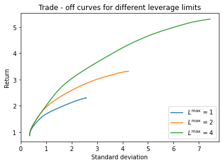

There are many other possible portfolio constraints besides the long only constraint. With no constraint (${\cal W} = {\bf R}^n$), the optimization problem has a simple analytical solution. We will look in detail at a leverage limit, or the constraint that $|w |_1 \leq L^\mathrm{max}$.
Another interesting constraint is the market neutral constraint $m^T \Sigma w =0$, where $m_i$ is the capitalization of asset $i$. $M = m^Tr$ is the market return, and $m^T \Sigma w = {\bf cov}(M,R)$. The market neutral constraint ensures that the portfolio return is uncorrelated with the market return.
In the following code we compute and plot optimal risk-return trade-off curves for leverage limits of 1, 2, and 4. Notice that more leverage increases returns and allows greater risk.
